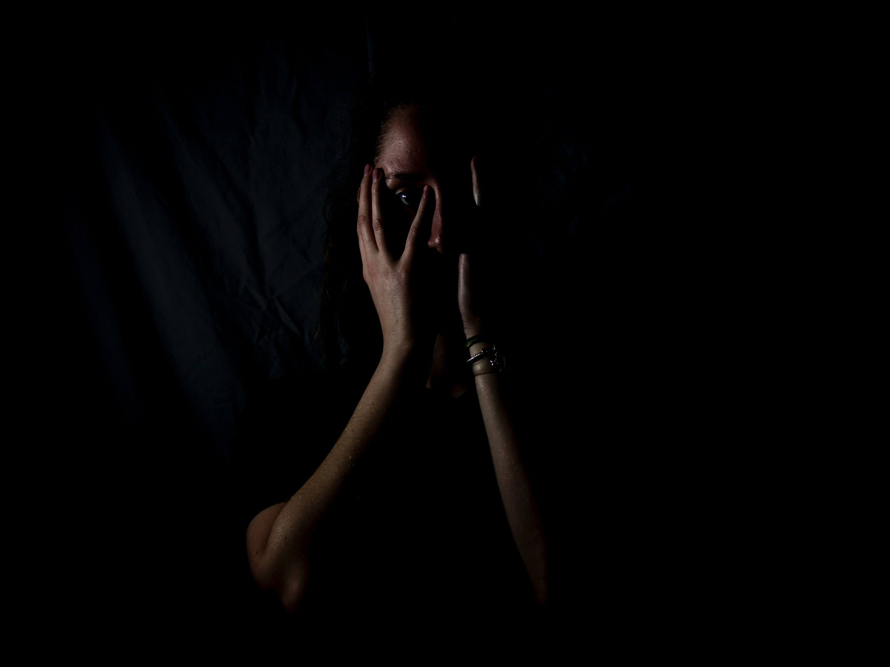

Fobia poate fi definită ca fiind o teamă irațională, foarte persistentă, dusă uneori la extreme și totuși inofensivă. Aceasta poate fi stârnită atât de o anumită situație, cât și de anticiparea ei. De exemplu, cei care suferă de acrofobie (teama de înălțime) se pot panica chiar și atunci când se gândesc că este necesar să urce pe o clădire înaltă. Există aproximativ 400 de fobii diverse, recunoscute oficial.
Fobiile pot fi identificate după anumite simptome:
Pentru a face față fobiilor, există un număr mare de tratamente. Eficacitatea acestora depinde atât de individ, cât și de tipul de afecțiune de care suferă. Una dintre metodele de tratament este chiar expunerea la fobie: pacientul este pus să-și înfrunte teama pentru ca acesta să își dea seama că obiectul de care se teme este absolut inofensiv. De asemenea, persoanele care suferă de fobii sociale sau agorafobie pot apela la un tratament medicamentos. Psihologul este persoana în măsură să stabilească de ce tratament are nevoie bolnavul.
În același timp, psihoterapia este o soluție foarte bună în ceea ce privește fobiile. În tratarea lor se aplică conceptul de „cui pe cui se scoate”, astfel că o persoană care suferă de ailurofobie (teama de pisici) va ajunge, sub îndrumarea terapeutului, să se apropie foarte mult de pisici. Astfel, pacientul va fi ajutat să înțeleagă că motivul fricii lui nu este întemeiat.
|  |